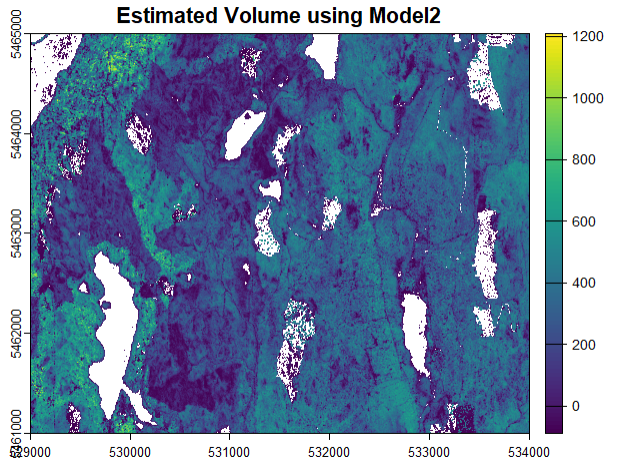

Show/Hide Code
library(lidR)
library(terra)
library(tidyverse)Set working directory
Read in the relevant .csv file
work_dir <- "~/GEM 521/Lab 2/Data" # set file path to Lab 2 data
setwd(work_dir) # set working directory to that file path
plot_table <- read_csv("~/GEM 521/Lab 2/Data/Plots/Plot_Table.csv") # .csv of the plot locations and
mkrf_plot_metrics <- read_csv("~/GEM 521/Lab 2/Data/Plots/mkrf_plot_metrics.csv") # .csv metrics of the lidar point cloud
#Add column to "mkrf_plot_metrics' called Plot_ID (join key)
mkrf_plot_metrics$Plot_ID = 1:20 # create a column with values 1-20 to join the plot_table to based on the ID.
#Join 'Plot_Table' and 'MKRF_Plot_Metrics' into 'data_table'
data_table <- plot_table %>%
full_join(mkrf_plot_metrics) # join the plot_table to mkrf_plot in a seperate frame called data_table.Now we have a data frame with all the metrics from both the LiDAR and plot.
[1] "Plot_ID" "X" "Y" "Net_Volume" "...1"
[6] "zmax" "zmean" "zsd" "zskew" "zkurt"
[11] "zentropy" "pzabovezmean" "pzabove2" "zq5" "zq10"
[16] "zq15" "zq20" "zq25" "zq30" "zq35"
[21] "zq40" "zq45" "zq50" "zq55" "zq60"
[26] "zq65" "zq70" "zq75" "zq80" "zq85"
[31] "zq90" "zq95" "zpcum1" "zpcum2" "zpcum3"
[36] "zpcum4" "zpcum5" "zpcum6" "zpcum7" "zpcum8"
[41] "zpcum9" "itot" "imax" "imean" "isd"
[46] "iskew" "ikurt" "ipground" "ipcumzq10" "ipcumzq30"
[51] "ipcumzq50" "ipcumzq70" "ipcumzq90" "p1th" "p2th"
[56] "p3th" "p4th" "p5th" "pground" "n"
[61] "area" Wow look at all those metrics! We have our XY coordinates, net volume estimated out in the field at each of these plots, and all sorts of metrics that are automatically derived from the LiDAR data. Lets use these metrics to compute some statistics and eventually a model to estimate attributes of the forest.
Lets start with ploting the relationship between LiDAR metrics and volume.
par(mfrow = c(2,3)) # Set layout to 2 rows and 3 columns
# plot relationship between lidar metrics and volume.
plot(Net_Volume ~ zq50, data = data_table) # ploting y as net_volume and x as zq50 (50th percentile height)
plot(Net_Volume ~ zmax, data = data_table) # Maximum height of the LiDAR returns, representing the tallest point in the dataset
plot(Net_Volume ~ zmean, data = data_table) # Mean height of all LiDAR returns, providing an average canopy or vegetation height.
plot(Net_Volume ~ zkurt, data = data_table) # Kurtosis of the height distribution, describing the sharpness or flatness of the distribution curve.
plot(Net_Volume ~ zsd, data = data_table) # Standard deviation of return heights, indicating variability in the canopy height structure.
plot(Net_Volume ~ zpcum5, data = data_table) # cumulative percentage of returns below the 50th percentile (median height).
par(mfrow = c(1,1)) # Reset to single plottingNow that we have the lidar metrics, lets build a model that can estimate the Net_Volume.
(Intercept) zq25
-139.44524 24.95973
Call:
lm(formula = Net_Volume ~ zq25, data = data_table)
Residuals:
Min 1Q Median 3Q Max
-139.56 -52.90 -12.56 32.47 231.47
Coefficients:
Estimate Std. Error t value Pr(>|t|)
(Intercept) -139.445 52.588 -2.652 0.0162 *
zq25 24.960 2.791 8.942 4.85e-08 ***
---
Signif. codes: 0 '***' 0.001 '**' 0.01 '*' 0.05 '.' 0.1 ' ' 1
Residual standard error: 89.54 on 18 degrees of freedom
Multiple R-squared: 0.8163, Adjusted R-squared: 0.8061
F-statistic: 79.97 on 1 and 18 DF, p-value: 4.846e-08Now that we have developed a model, we will apply the model over our entire study area To do this, we must calculate LiDAR metrics over the entire study area on a grid. If we use ModelA, we have to calculate the 25th percentile.
We will use pixel_metrics function in lidR and the app function in terra.
Lets calculate grid_metrics for all MKRF. We need to calculate the zq25 metric for each pixel because depending on the template it can be for each pixel of a raster (area-based approach), or each polygon, or each segmented tree, or on the whole point cloud. In our case we will be doing every pixel. For the time sake, the spatial resolution will be set to 10 meters.
# Calculate grid_metrics for all MKRF
# Create LAScatalog of filtered, normalized tiles with points 2 m - 65 m
norm_cat_mkrf <- readLAScatalog("~/GEM 521/Lab 2/Data/Normalized") # read in Normalized LAS file from Lab2
opt_filter(norm_cat_mkrf) <- '-keep_z_above 2 -drop_z_above 65' # remove points above 65m and below 2 meters
#Calculate grid metrics of mean Z at 10 m resolution for entire study area
pixel_metrics_mkrf <- pixel_metrics(norm_cat_mkrf, .stdmetrics_z, 10)
plot(pixel_metrics_mkrf)Look at all the rasters we have created. We can plot individual rasters using variations of plot(pixel_metrics_mkrf). For this model, we want to extract the zq25 raster from this SpatRaster. We can do that by using the subset function in the terra package. Let’s plot the extracted SpatRaster to confirm it was successful.
After extracting the 25th percentile for each pixel across the study area we can apply Model 2. To do this, we first need to write a function that will apply this equation to all pixels in zq25_mkrf. The function we will create is based on the coefficients derived from Model 2. And lets apply that function to the entire MKRF study area.
zq25_mkrf <- terra::subset(pixel_metrics_mkrf, "zq25") # assign the subset zq25 metric to a variable
# function based on Model2 (ModelB) coefficients
f <- function(x) {
24.96* x -139.45
}
#Apply function to raster
net_volume_mkrf <- terra::app(zq25_mkrf, f) # apply function f to the zq25 metric across the entire area
plot(net_volume_mkrf,
main = 'Estimated Volume using ModelB',) # plot, in 2D, the estimated volume based on our model